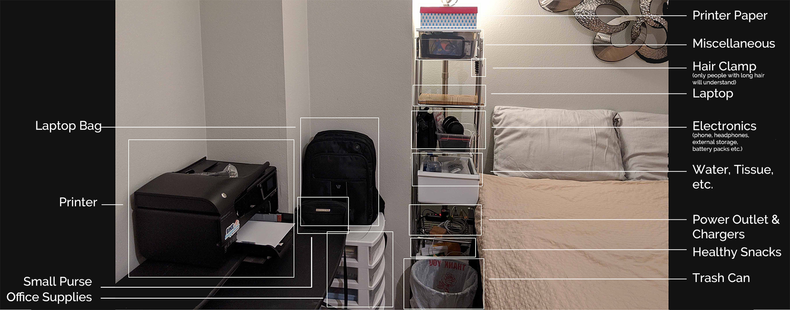
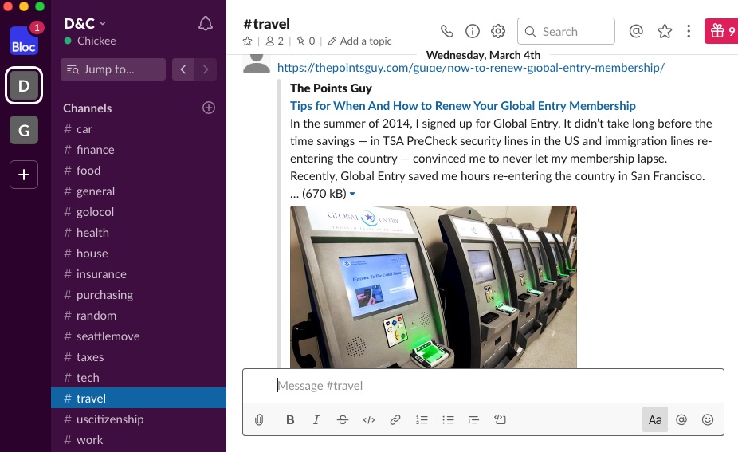

In lieu of the COVID-19 pandemic, the world was forced to work and study from home. This might be easy for some people but can be extremely hard for others, especially if you have your kids (or your parents) around. Hey, some kids prefer to be left alone too. Working and studying from home wasn’t my first choice either, but I learned to love it.
 Working from home. This is what I hope I look like. My everyday reality is far from it.
Working from home. This is what I hope I look like. My everyday reality is far from it.
Let me first give you a background on how I get started with working from home. As I said, it wasn’t my first choice. My boyfriend (now husband) is a world traveler. Wanting to explore the world with him, I needed to find ways to still earn while on the road. I was a registered nurse in both the Philippines & in the USA when we started traveling together. However, my licenses were useless in other countries unless I study again and pass the local board exams and local language exams of each country or region I want to work at. It was not feasible nor practical. So I tried teaching English in brick-and-mortar schools for the interim but it wasn’t feasible long term either. Then I switched to IELTS coaching online. That was successful so I stuck with it.
Seeing the advantages of working from home and enjoying the nomadic lifestyle, I decided to completely switch gears. While online coaching is fulfilling & profitable, I don’t see myself doing it for the long haul. During our travels, most of the long-term travelers we met work in the tech industry. Most of them were web developers. Having come from a family of engineers myself, and enjoying work as a tech support post-college, I thought, “Hey, web development might work for me too!” So that, along with other compelling reasons, propelled me to seriously explore the world of tech. Not long after, I enrolled in a UX Design program. Not just any UX Design program- it’s part design and part web development. The former is what I'm naturally good at, and the latter is what I thought I can learn quickly. The kicker? It’s 100% online! So not only was I working from home, I’d be studying from home too. Self-isolation at its finest. Or is it?
How it can feel sometimes.
There are some differences between working from a home (staying long term in one place) and working nomadically (constant moving). I'll stick with talking about working from home here since that's what most people are experiencing now. If you're interested about my experience in working nomadically,
send me a message so I can get into writing about it sooner. Anyhow, here are the things that kept me going with WFH and actually loving it.
Trial and Error
No single approach works for everybody- even the popular advice of having a separate office space in the house. It doesn’t or can’t work for everybody. Some don’t even have the luxury of extra space to begin with. So you have to know what works for you.
Even if this might be a temporary setup because of the virus, it still pays to do the trial and error approach.
- We don't know how long this pandemic will last.
- Once you know what works for you, it will be easier next time you need to WFH again.
Bonus: It can be so effective that it can be a career changing move for you. Just like what happened to me.
Things you have to pay attention to:
- Time you're most productive
- time of the day, and the duration of optimal focus.
- Type of setup that's most comfortable.
- separate office space, in bed, at dining table, etc.
- Best communication lines
- phone, email, chat, etc.
Place all your work supplies within arms reach
Whether you have a designated desk for your computer or if you choose your bed as your main workspace, have a designated space for stowing all your work supplies. If you prefer to move around or can’t decide yet where to work long-term, have a container that you can carry around which can house all your essential equipment. If you need a printer, temporarily move it closer to your workspace. Having everything you need within arms reach will help you focus. This is what can happen when you don’t.
You need a notepad. Oops! It’s in the other room. You stand up, turn around and notice that your plant is kinda wilted. You make a quick trip to the kitchen to get water. In the kitchen, you saw the dishes that you forgot to wash last night. You wash the dishes. You make your way back to your plant. Then your partner comes in and tells you about the latest news and turns on the TV, they ask if you can make them food, tell you about what’s happening with your in-laws. Poof! By the time you remember to water your plant it’s already dead and your work momentum- gone.
Have everything within arms reach.
 As of writing, this is my current work from home setup. I mostly work in-bed, and this is the shelf and drawer that holds most of my work supplies.
Minimize distractions
Put your phone on
“Do Not Disturb” mode. Silent mode is not enough. It should not vibrate too. Your focus and momentum are more precious when you don’t have bosses or colleagues checking on you. If you’re most people, you can do all of your tasks without your phone. So act as if you don’t have one.
If you’re a neat freak like me, you're probably distracted by unfixed beddings, random objects or clothing lying around the room. Fix or keep them out of sight first. It’s going to stay in the back of your head if you don’t and will compete with your focus.
Tell people you’re working from home and set expectations
Most people don’t get the “work” part of “work from home”. Most of them, especially your family and friends, will assume that if you’re at home you’re probably free and can be disturbed anytime. Don’t let them. Be firm with your schedule as if you're working in a corporate office. Tell your friends and family the times they can call or expect a response from you.
Both my husband and I work from home and, as much as possible, we use
Slack to communicate non-urgent stuff, and
Messenger for semi-urgent stuff. Impromptu conversations during work hours are for urgent cases only.
 Whenever people hear that my husband and I use Slack to communicate with each other, they usually find it odd and we usually get a laugh. But it works for us, so we continue using it. And why not? Isn't Slack made from teams and couples are supposed to be teammates?
Follow a routine
If you already have an office routine, trying to follow the same at home would be ideal. However, if you have kids and/or a partner to cook for, that might not work. So you'd have to find a better routine that would fit your lifestyle.
In my case, my clients were mostly based in Southeast Asia (SEA) and the Middle East. So I needed to adjust to their time zones. When I was still based in SEA it was easier. But when I moved to US, there was a time I would sleep at 6am, wake up at 11am, sleep late afternoon and wake up again at 8pm until 6am. It wasn't easy but doable.
Make a point to exercise
Find a way to exercise. Since gyms are also closed and people are discouraged to go out at this time, it might be extra hard to find ways to exercise. Incorporate it in your essential functions and make do of what’s available . Need to dispose of the trash? Take the stairs instead of the elevator. Have stairs at home? Climb up and down more often. Need to exercise your arms? Manually wash your dishes.
If you need motivation to exercise at home, some gym instructors, who are equally home-bound right now, are offering free virtual workouts via watch parties. Or you can just imitate
this creative dude.
Balance work with rest and relaxation
If you’re working from home, this can either be the easiest or hardest thing to do. It’s either you feel lazy to work because no one’s watching you, or you can’t stop working because there’s no physical separation between work and home. I experienced both.
For the former, routine can help. Incentive can work too. When my husband and I still live in a lake side property, he doesn’t allow himself to kayak unless he finishes his work goal for the day. For the latter, depending on what you find during your trial & error phase, having separate office space might work. Scheduling time for purely work and purely play helped me.
This is a pretty good motivation to finish work early.
Make use of technology to connect with people
We have an abundance of ways to connect. Social media, chat apps, free calls, online groups, etc. Utilize them. I am lucky to have amazing friends and family. I have active message threads with my friends from childhood, friends from college & highschool, and extended family. It also helps that I have a partner that also works from home. Not once did I feel socially or physically isolated.
It was also when I didn’t have a choice to work and study from home that I discovered all the amazing ways to find people with the same interest. I found out about
the FIRE movement,
Buy Nothing Project,
Meetup.com, and many other outlets for conscious socializing.
These are the main things I learned in my work from home situation. Depending on your circumstances and
tendencies, the ease of following these suggestions might vary. That’s why I listed trial and error as the number one step. We all have different needs and responsibilities. There’s no one-size-fits-all approach to it. The best work and study from home strategy is the one that works for you.